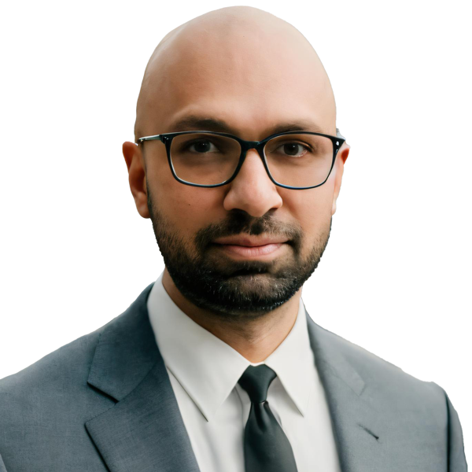
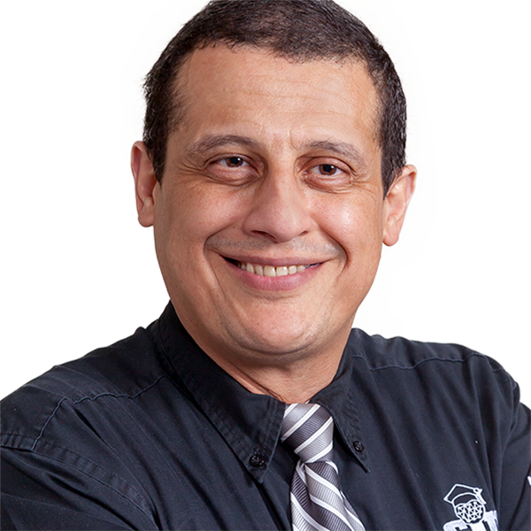
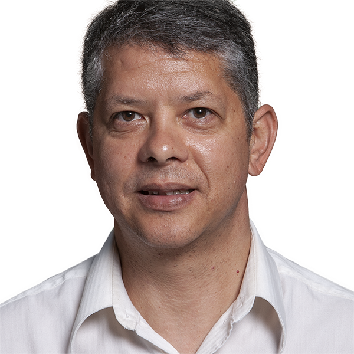
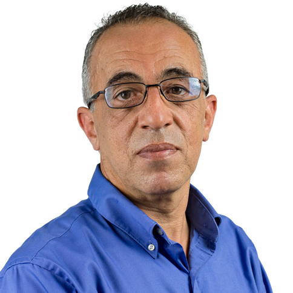
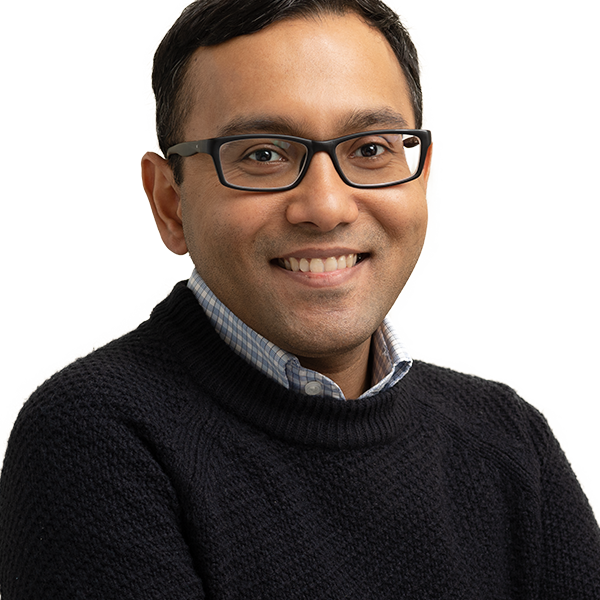
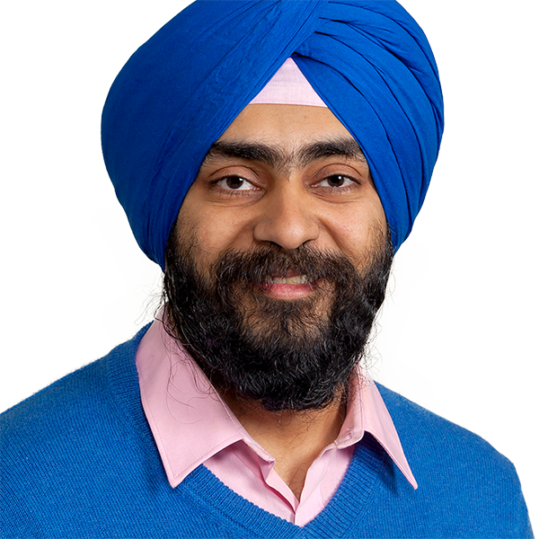
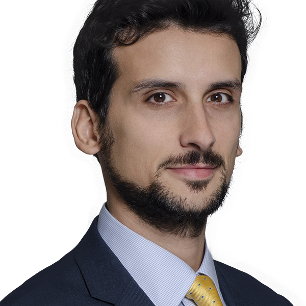
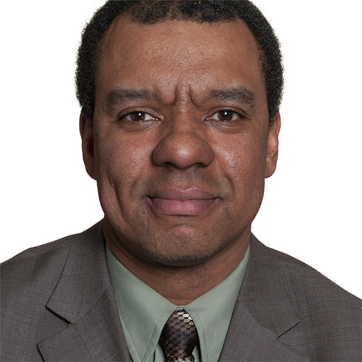
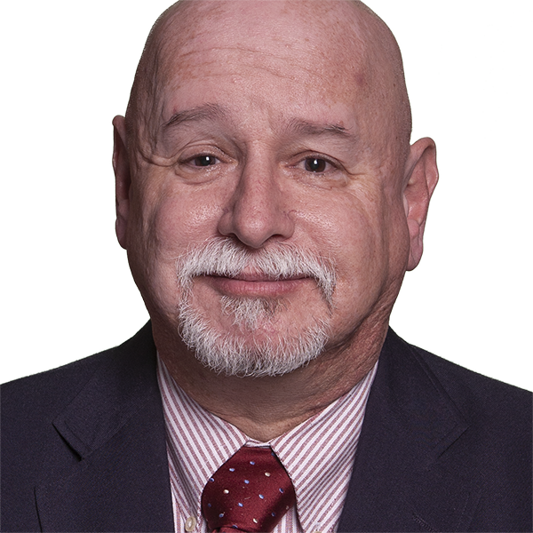
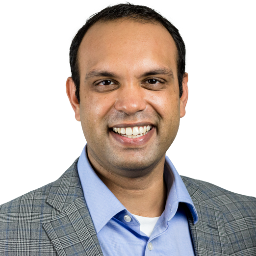

Directory
School of Applied Engineering & Technology

Pramod AbichandaniAssociate ProfessorroboticsAdvanced Air MobilityAI EducationSTEM Education Mohsen AziziAssociate ProfessorControl systemsintelligent fault diagnosis and prognosis techniquespower systemsmicrogridsRoni Barak VenturaAssistant ProfessorCausal inferenceComplex systemsFirearm violencefuture of workAshish BorgaonkarAssistant ProfessorCivil and Environmental EngineeringEngineering educationResearch Translation into EducationDaniel BraterisNCE Executive Director of Experiential LearningEmbedded SystemsYanxiao FengAssistant ProfessorIndoor personal thermal comfort and controlHuman-built environment interactionsDigital twin in the built environmentWorkplace safety and healthChristian HansisUniversity LecturerMohab HusseinUniversity LecturerGeostructuralValue EngineeringSeismic RetrofittingSustainability and ResilienceHuiran JinAssociate ProfessorRemote Sensingland cover/land usemodeling and change analysismap accuracy
Mohsen AziziAssociate ProfessorControl systemsintelligent fault diagnosis and prognosis techniquespower systemsmicrogridsRoni Barak VenturaAssistant ProfessorCausal inferenceComplex systemsFirearm violencefuture of workAshish BorgaonkarAssistant ProfessorCivil and Environmental EngineeringEngineering educationResearch Translation into EducationDaniel BraterisNCE Executive Director of Experiential LearningEmbedded SystemsYanxiao FengAssistant ProfessorIndoor personal thermal comfort and controlHuman-built environment interactionsDigital twin in the built environmentWorkplace safety and healthChristian HansisUniversity LecturerMohab HusseinUniversity LecturerGeostructuralValue EngineeringSeismic RetrofittingSustainability and ResilienceHuiran JinAssociate ProfessorRemote Sensingland cover/land usemodeling and change analysismap accuracy Samuel LieberAssociate ProfessorDavid LublinerSenior University LecturerGeriatric EngineeringMedical InformaticsGeriatric Engineering, intelligent living environmentsKnowledge Repositories
Samuel LieberAssociate ProfessorDavid LublinerSenior University LecturerGeriatric EngineeringMedical InformaticsGeriatric Engineering, intelligent living environmentsKnowledge Repositories
Mohamed MahgoubAssociate ProfessorSeismic behavior and retrofit of reinforced concrete structuresHighway bridge analysis, design, rehabilitation and constructionConcrete design and testingGeotechnical
Laramie PottsAssociate Professor
Mohammad RabieSenior University Lecturer
Prateek ShekharAssistant ProfessorEngineering education
Jaskirat SodhiSenior University Lecturer
Angelantonio TafuniAssociate ProfessorMelissa ValouraUniversity Lecturer
David WashingtonAssociate Professor
John WigginsSenior University Lecturer
Chang YaramothuAssistant ProfessorConcussion/TBI DiagnosticsEye MovementsVestibular SystemEnduranceWei YinAssistant ProfessorExoskeletonDigital human modelingWearablesAssociate Professors
Pramod AbichandaniAssociate ProfessorroboticsAdvanced Air MobilityAI EducationSTEM EducationMohsen AziziAssociate ProfessorControl systemsintelligent fault diagnosis and prognosis techniquespower systemsmicrogridsHuiran JinAssociate ProfessorRemote Sensingland cover/land usemodeling and change analysismap accuracyMohamed MahgoubAssociate ProfessorSeismic behavior and retrofit of reinforced concrete structuresHighway bridge analysis, design, rehabilitation and constructionConcrete design and testingGeotechnicalLaramie PottsAssociate ProfessorAngelantonio TafuniAssociate ProfessorDavid WashingtonAssociate ProfessorAssistant Professors
Roni Barak VenturaAssistant ProfessorCausal inferenceComplex systemsFirearm violencefuture of workAshish BorgaonkarAssistant ProfessorCivil and Environmental EngineeringEngineering educationResearch Translation into EducationYanxiao FengAssistant ProfessorIndoor personal thermal comfort and controlHuman-built environment interactionsDigital twin in the built environmentWorkplace safety and healthPrateek ShekharAssistant ProfessorEngineering educationChang YaramothuAssistant ProfessorConcussion/TBI DiagnosticsEye MovementsVestibular SystemEnduranceWei YinAssistant ProfessorExoskeletonDigital human modelingWearablesNo faculty match “”.